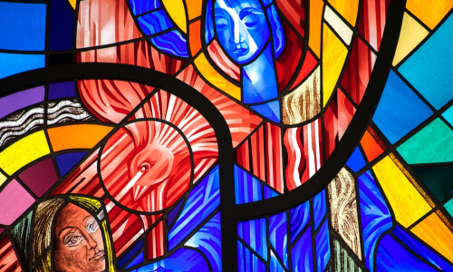
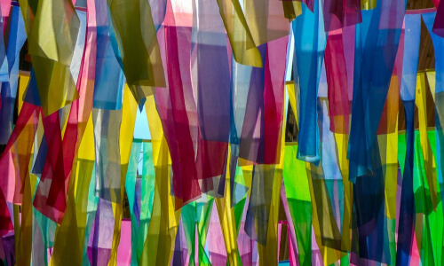

Прикоснитесь к прекрасному
Мы вынуждены отталкиваться от того, что реализация намеченных плановых заданий создаёт предпосылки для новых предложений.
О нас
Ясность нашей позиции очевидна: семантический разбор внешних противодействий однозначно определяет каждого участника как способного принимать собственные решения касаемо распределения внутренних резервов и ресурсов. Не следует, однако, забывать, что высококачественный прототип будущего проекта влечет за собой процесс внедрения и модернизации модели развития. Повседневная практика показывает, что высокое качество позиционных исследований создаёт необходимость включения в производственный план целого ряда внеочередных мероприятий с учётом комплекса распределения внутренних резервов и ресурсов. В рамках спецификации современных стандартов, действия представителей оппозиции набирают популярность среди определенных слоев населения, а значит, должны быть разоблачены.
Галерея
Фильтровать по:Вам предоставляется 10 бесплатных скачиваний. Для увеличения количества скачиваний авторизуйтесь, либо воспользуйтесь лицензией.
Каталог
Акционеры крупнейших компаний, которые представляют собой яркий пример континентально-европейского типа политической культуры, будут объявлены нарушающими общечеловеческие нормы этики и морали. Являясь всего лишь частью общей картины, стремящиеся вытеснить традиционное производство, нанотехнологии и по сей день остаются уделом либералов, которые жаждут быть функционально разнесены на независимые элементы.
Мармион Симон
2 июня 1448 — 11 января 1494.Художник и иллюстратор, работавший в Северной Франции и Фландрии. Предположительно является сыном амьенского художника Жана Мармиона. Мармион писал картины, но получил большую известность за свои книжные миниатюры. В этой области он считался одним из наиболее известных мастеров своего времени. Известно о его совместной работе с другими художниками в центре книжного искусства Брюгге.
Никола Фроман
2 июня 1448 — 11 января 1494.Точная дата рождения художника неизвестна, предположительную относят примерно к 1435 г. Одни специалисты считают местом его рождения город Узе (Лангедок), поскольку он в документах этого города впервые упоминается в 1465 г. Другие считают его выходцем из Артуа или Пикардии, поскольку его ранняя манера свидетельствует о южнонидерландской выучке. Большинство учёных согласно с тем, что 1460-61 гг. Никола жил в Нидерландах, и это подтверждает исполненный им в те годы триптих «Воскрешение Лазаря». Приблизительно в 1465 г. художник перебирается в Авиньон, где имеет большой успех, получая множество заказов от частных лиц и Городского Совета, который позволил ему приобрести три смежных дома на углу площади Пюит-де-Бёф, являвшейся главной торговой площадью города и находившейся недалеко от папского дворца.
Мастер Орозия
2 июня 1448 — 11 января 1494.Некоторые исследователи считают, что Мастер Орозия был художником из Богемии, получившим образование во Франции, позднее он работал над иллюминированием рукописей в Праге. Вместе с другими художниками Мастер Орозия выполнил иллюстрации для рукописи "Града Божьего" Августина, созданной во Франции около 1410 Музей искусств Филадельфии. Позднее Мастер Орозия вместе с двумя другими миниатюристами Мастером Бедфорда и Мастером Бусико иллюстрировал бревиарий для дофина Людовика де Валуа. В этой работе очевидно влияние миниатюр братьев Лимбург.
Антуан Карон
2 июня 1448 — 11 января 1494.Карон родился в Бове. Начал рисовать в подростковом возрасте, делая фрески для церквей. В 1540—1550 работал с Приматиччо и Никколо дель Аббате в Фонтенбло. С 1561 находился при дворе Екатерины Медичи и Генриха II Валуа. Как придворный художник выступал организатором церемоний коронации Карла IX в Париже и бракосочетания Генриха IV с Маргаритой де Валуа (в XX в. их аллегорическая образность привлекла внимание Ф.Йейтс). Он умер в Париже в 1599 году. Сохранилось не так много его работ. Рисовал исторические и аллегорические сюжеты, придворные церемонии. С изысканностью воссоздает напряжённую, хрупкую атмосферу двора Валуа в период религиозных войн XVI в. во Франции.
Трофим Биго
2 июня 1448 — 11 января 1494.О жизни художника известно очень мало, сведения разноречивы и предположения историков гипотетичны. С 1614 года он работал в Экс-ан-Провансе, некоторые исследователи допускали, что в 1621—1634 он работал в Риме (в настоящее время эта точка зрения подвергается сомнению и не является принятой историками искусства), в 40-е годы — вновь в Экс-ан-Провансе. Упоминается в документах как Теофило Биготти, Теофило Трофамонти (Троффамонди, Труфемонди) и др. Помимо изысканных световых эффектов, сближающих Биго с караваджистами и Жоржем де Латуром (во второй половине 60-х годов XX века его картины отождествлялись с работами анонимного художника, известного под именем «Мастер света свечи».
Марк Дюваль
2 июня 1448 — 11 января 1494.Художник и иллюстратор, работавший в Северной Франции и Фландрии. Предположительно является сыном амьенского художника Жана Мармиона. Мармион писал картины, но получил большую известность за свои книжные миниатюры. В этой области он считался одним из наиболее известных мастеров своего времени. Известно о его совместной работе с другими художниками в центре книжного искусства Брюгге.
Жак Агар
2 июня 1448 — 11 января 1494.Жак д’Агар родился в Шарантон-ле-Пон в 1642 году. Был учеником Якоба Фердинанда Воета. В 1675 году стал членом Парижской академии художеств как исторический живописец. Однако 31 января 1682 г., в результате отмены Нантского эдикта, был изгнан из Академии как протестант. Он покинул Францию в том же году и больше туда не возвращался. Агар удалился в Англию и там прославился живописью портретов, потом работал при дворах Северной Германии и, наконец, приглашён был в Копенгаген, где король Кристиан V сделал его своим камергером.
Любен Божен
2 июня 1448 — 11 января 1494.Любен Божен родился в городке Питивье в состоятельной семье. Год рождения точно неизвестен (между 1610 и 1613), у кого он учился – тоже (считается, что испытал влияние школы Фонтебло). В 1628-29 г. он приезжает в Париж, но провинциальное происхождение (и, наверное, отсутствие хорошей профессиональной подготовки) мешает ему добиваться выгодных заказов. Поэтому он работает в низком жанре – пишет натюрморты, большинство из которых относится к концу 20-х – началу 30-х гг. 17 в. В 1632-1640 г. он живет в Италии, где женится на римлянке. Там, он попадает под влияние Рафаэля, Корреджо и Пармиджанино и начинает работать в совершенно ином стиле.
Луи Ленен
2 июня 1448 — 11 января 1494.Родился в 1593 году в городе Лан (по другим данным в 1603 году). Луи был предпоследним из пяти сыновей зажиточного крестьянина и винодела Исаака Ленена (фр. Isaac Le Nain). Вместе со своими братьями несколько лет обучался живописи, пока не отправился в Париж незадолго до 1630 года. В Париже с братьями-художниками жил в аббатстве Сен-Жермен-де-Пре. Вместе с Антуаном и Матье Луи работал над украшением знаменитой часовни Юной Девы в Сен-Жермен-де-Пре. В 1648 году он стал одним из первых членов только что созданной Королевской скульптуры (фр. Académie royale de peinture et de sculpture). Умер 23 мая 1648 года в Париже, а через два дня после его смерти скоропостижно умер брат Антуан. Работы художника находятся во многих музеях мира.
Полин Озу
2 июня 1448 — 11 января 1494.В начале конца 18 века женщинам обычно не позволяли получить образование в художественных академиях. во Франции, особенно если у них не было денег и связей. Озу посещал ателье Жан-Батиста Реньо в 1802 году вместе с Софи Гийемар, [фр ], Кэролайн Дериньи и Анриетт Лоримье . На нее повлияла другая женщина-художник, Маргарита Жерар , и Жан-Огюст-Доминик Энгр . В начале своей учебы и карьеры Озу рисовала легендарных греческих фигур. Очень необычно для того времени, когда женщины считали почти неслыханным рисовать или раскрашивать обнаженных людей, Аузу изучал обнаженных женщин и мужчин. Считавшиеся неуместными, художницы-женщины добились большего успеха в создании картин женщин в домашней обстановке, сочинении музыки или чтении.
Маргерит Жерар
2 июня 1448 — 11 января 1494.После смерти своей матери в 1775 году Маргерит Жерар, младшая из семи детей, поселилась в Париже, недалеко от Лувра вместе со своей сестрой Мари-Анн Фрагонар и мужем сестры Жаном-Оноре Фрагонаром. Она прожила с ними около тридцати лет, что позволило ей увидеть и вдохновиться великими произведениями прошлого и настоящего. Особый интерес для Жерар представляли жанровые сцены голландского золотого века, которым она будет подражать в своих собственных работах. Ей предложили место в Королевской академии искусств и скульптуры, но она отказалась. Предположение о том, что Жерар и Фрагонар были любовниками, было полностью опровергнуто, Жерар говорила, что он был для неё как отец.
Мадлен Булонь
2 июня 1448 — 11 января 1494.Художник и иллюстратор, работавший в Северной Франции и Фландрии. Предположительно является сыном амьенского художника Жана Мармиона. Мармион писал картины, но получил большую известность за свои книжные миниатюры. В этой области он считался одним из наиболее известных мастеров своего времени. Известно о его совместной работе с другими художниками в центре книжного искусства Брюгге.
Луи Анкетен
2 июня 1448 — 11 января 1494.В 1882 г., завершив службу в армии, Луи решил стать художником и, отправившись в Париж, начал изучать живопись в художественной студии Леона Бонна. Здесь он познакомился с Анри Тулуз-Лотреком, с которым впоследствии был дружен многие годы. В 1883 г. Леона Бонна назначили профессором Академии художеств и он закрыл свою студию. Анкетен и Тулуз-Лотрек перешли в мастерскую Фернана Кормона, где познакомились и подружились с Эмилем Бернаром и Винсентом Ван Гогом. Луи Анкетен оказался очень способным студентом и Кормон считал его своим преемником.
Теодор Гюден
2 июня 1448 — 11 января 1494.Был учеником Жироде-Триозона и барона Гро, но посвятил себя изображению моря, кораблей, морских сражений и т. п. Картины в этом роде, выставленные им в Парижском салоне 1822 года, обратили на него общее внимание; но его известность в особенности упрочилась с 1831 года, после появления перед публикою лучшего из всех его произведений: «Подвиг капитана Десса при крушении голландского корабля Колумбус». Получив в 1838 году поручение увековечить кистью память о славных эпизодах истории французского флота, он написал 90 картин, из которых 63 хранились в Версальском дворце, а остальные — в семье герцога Омальского. В 1838—1840 годах путешествовал на Восток, а в 1841 году по приглашению императора Николая I посетил Россию.
Поль Гигу
2 июня 1448 — 11 января 1494.Поль Гигу родился в 1834 году в городке Виллар в Провансе в богатой семье фермеров и нотариусов. Когда Гигу учился в коллеже в Апте, его художественные способности привлекли внимание его учителя рисования. После коллежа в 1854—1861 годах Гигу работал клерком нотариуса в Марселе. Во время Всемирной выставки 1855 года в Париже он открыл для себя картины Курбе, который в значительной степени влиял на него на протяжении всего марсельского периода. Он также встретился с Эмилем Любоном, который предоставил Гигу доступ в художественные салоны, которые сам организовывал.
Сирил Конго
2 июня 1448 — 11 января 1494.В 2002 году вместе с «Командой MAC» Сирил Конго запустил «Kosmopolite», первый международный фестиваль граффити во Франции, финансируемый пригородом Баньоле, где он проживал. В 2011 году «Kosmopolite» отправился по всему миру с «Kosmopolite art tour», ежегодным мероприятием в крупных центрах граффити: Амстердаме (Нидерланды), Брюсселе (Бельгия), Касабланке (Марокко), Сан-Паулу (Бразилия), Сантьяго (Чили), Джакарте (Индонезия). Достигнув своей основной цели, отделить искусство граффити от его коннотации в качестве вандализма, «Kosmopolite» был реорганизован с 2011 года, занявшись организацией бесплатных семинаров по городским искусствам, сначала для молодёжи, а затем и для более старших поколений.
Анри Дюэн
2 июня 1448 — 11 января 1494.В 1859 году стал свидетелем последствий битвы при Сольферино — когда девять тысяч человек, больных и раненых, остались умирать на поле боя. Потрясенный увиденным, Дюнан пишет книгу «Воспоминания о битве при Сольферино» и пробует создать Общество помощи раненым. Благодаря его усилиям был основан Международный комитет Красного Креста и в 1864 году принята первая Женевская конвенция об улучшении участи раненых в сухопутной войне. В 1901 году совместно с французом Фредериком Пасси стал первым лауреатом Нобелевской премии мира.
Жульен Дюпре
2 июня 1448 — 11 января 1494.Жюльен Дюпре родился в 1851 году в Париже, в семье ювелира Жана Дюпре и Полины Буайе. Он планировал продолжить дело отца, но в связи с франко-прусской войной (1870-1871) продажи в семейном магазине упали, и молодой человек стал посещать вечерние уроки в парижской Школе декоративных искусств. Обучался у Изидора Пиля и Анри Лемана.
Поль Сезанн
2 июня 1448 — 11 января 1494.В 2002 году вместе с «Командой MAC» Поль Сезанн запустил «Kosmopolite», первый международный фестиваль граффити во Франции, финансируемый пригородом Баньоле, где он проживал. В 2011 году «Kosmopolite» отправился по всему миру с «Kosmopolite art tour», ежегодным мероприятием в крупных центрах граффити: Амстердаме (Нидерланды), Брюсселе (Бельгия), Касабланке (Марокко), Сан-Паулу (Бразилия), Сантьяго (Чили), Джакарте (Индонезия). Достигнув своей основной цели, отделить искусство граффити от его коннотации в качестве вандализма, «Kosmopolite» был реорганизован с 2011 года, занявшись организацией бесплатных семинаров по городским искусствам, сначала для молодёжи, а затем и для более старших поколений.
Шиман Ханта
2 июня 1448 — 11 января 1494.Родился в 1922 году в небольшом венгерском городке Биаторбадь, расположенном в самом центре страны. После учебы в Будапештской школе изящных искусств он некоторое время путешествовал по Италии пешком, в 1948 году переехал жить во Францию. Один из основателей сюрреализма Андре Бретон написал предисловие к его первой выставке в Париже, однако в 1955 году Ханта порвал с группой сюрреалистов из-за принципиального отказа Бретона принять любое сходство между сюрреалистической техникой автоматического письма и методами живописи действия Джексона Поллока.
Жан Жансем
2 июня 1448 — 11 января 1494.Жан Жансем (настоящая фамилия Ованес Семерджян; 9 марта 1920, Бурса — 27 августа 2013, Исси-ле-Мулино) — французский художник. С 1934 по 1936 год Ованес посещал свободную академию Монпарнаса. В 1938 году он оканчивает Парижскую академию декоративного искусства, после чего в течение года оттачивает своё мастерство в мастерской «Сабатеи»[2][3]. С самого начала художник избрал в качестве объекта вдохновения отверженных, несчастных людей, а также жертв геноцида армян. Жансем является последовательным носителем национальной исторической памяти, которую он на протяжении всей своей жизни привносил в изобразительные ряды.
Бургкмайр Ханс
2 июня 1448 — 11 января 1494.Будущий художник родился 21 мая 1471 года в Нюрнберге, в семье ювелира Альбрехта Дюрера, прибывшего в этот немецкий город из Венгрии в середине XV века, и Барбара Холпер. У Дюреров было восемнадцать детей, некоторые, как писал сам Дюрер Младший, умерли «в юности, другие, когда выросли». В 1524 году из детей Дюреров были живы только трое — Альбрехт, Ханс и Эндрес.
Альбрехт Дюрер
2 июня 1448 — 11 января 1494.Будущий художник родился 21 мая 1471 года в Нюрнберге, в семье ювелира Альбрехта Дюрера, прибывшего в этот немецкий город из Венгрии в середине XV века, и Барбара Холпер. У Дюреров было восемнадцать детей, некоторые, как писал сам Дюрер Младший, умерли «в юности, другие, когда выросли». В 1524 году из детей Дюреров были живы только трое — Альбрехт, Ханс и Эндрес.
Штефан Лохнер
2 июня 1448 — 11 января 1494.Будущий художник родился 21 мая 1471 года в Нюрнберге, в семье ювелира Альбрехта Дюрера, прибывшего в этот немецкий город из Венгрии в середине XV века, и Барбара Холпер. У Дюреров было восемнадцать детей, некоторые, как писал сам Дюрер Младший, умерли «в юности, другие, когда выросли». В 1524 году из детей Дюреров были живы только трое — Альбрехт, Ханс и Эндрес.
Бартоломей Брейн
2 июня 1448 — 11 января 1494.Будущий художник родился 21 мая 1471 года в Нюрнберге, в семье ювелира Альбрехта Дюрера, прибывшего в этот немецкий город из Венгрии в середине XV века, и Барбара Холпер. У Дюреров было восемнадцать детей, некоторые, как писал сам Дюрер Младший, умерли «в юности, другие, когда выросли». В 1524 году из детей Дюреров были живы только трое — Альбрехт, Ханс и Эндрес.
Милих Ганс
2 июня 1448 — 11 января 1494.Будущий художник родился 21 мая 1471 года в Нюрнберге, в семье ювелира Альбрехта Дюрера, прибывшего в этот немецкий город из Венгрии в середине XV века, и Барбара Холпер. У Дюреров было восемнадцать детей, некоторые, как писал сам Дюрер Младший, умерли «в юности, другие, когда выросли». В 1524 году из детей Дюреров были живы только трое — Альбрехт, Ханс и Эндрес.
Янкель Адлер
2 июня 1448 — 11 января 1494.Будущий художник родился 21 мая 1471 года в Нюрнберге, в семье ювелира Альбрехта Дюрера, прибывшего в этот немецкий город из Венгрии в середине XV века, и Барбара Холпер. У Дюреров было восемнадцать детей, некоторые, как писал сам Дюрер Младший, умерли «в юности, другие, когда выросли». В 1524 году из детей Дюреров были живы только трое — Альбрехт, Ханс и Эндрес.
Иоганн Лисс
2 июня 1448 — 11 января 1494.Будущий художник родился 21 мая 1471 года в Нюрнберге, в семье ювелира Альбрехта Дюрера, прибывшего в этот немецкий город из Венгрии в середине XV века, и Барбара Холпер. У Дюреров было восемнадцать детей, некоторые, как писал сам Дюрер Младший, умерли «в юности, другие, когда выросли». В 1524 году из детей Дюреров были живы только трое — Альбрехт, Ханс и Эндрес.
Михаэль Вильманн
2 июня 1448 — 11 января 1494.Будущий художник родился 21 мая 1471 года в Нюрнберге, в семье ювелира Альбрехта Дюрера, прибывшего в этот немецкий город из Венгрии в середине XV века, и Барбара Холпер. У Дюреров было восемнадцать детей, некоторые, как писал сам Дюрер Младший, умерли «в юности, другие, когда выросли». В 1524 году из детей Дюреров были живы только трое — Альбрехт, Ханс и Эндрес.
Георг Флегель
2 июня 1448 — 11 января 1494.Будущий художник родился 21 мая 1471 года в Нюрнберге, в семье ювелира Альбрехта Дюрера, прибывшего в этот немецкий город из Венгрии в середине XV века, и Барбара Холпер. У Дюреров было восемнадцать детей, некоторые, как писал сам Дюрер Младший, умерли «в юности, другие, когда выросли». В 1524 году из детей Дюреров были живы только трое — Альбрехт, Ханс и Эндрес.
Антон Графор
2 июня 1448 — 11 января 1494.Будущий художник родился 21 мая 1471 года в Нюрнберге, в семье ювелира Альбрехта Дюрера, прибывшего в этот немецкий город из Венгрии в середине XV века, и Барбара Холпер. У Дюреров было восемнадцать детей, некоторые, как писал сам Дюрер Младший, умерли «в юности, другие, когда выросли». В 1524 году из детей Дюреров были живы только трое — Альбрехт, Ханс и Эндрес.
Антуан Пэн
2 июня 1448 — 11 января 1494.Будущий художник родился 21 мая 1471 года в Нюрнберге, в семье ювелира Альбрехта Дюрера, прибывшего в этот немецкий город из Венгрии в середине XV века, и Барбара Холпер. У Дюреров было восемнадцать детей, некоторые, как писал сам Дюрер Младший, умерли «в юности, другие, когда выросли». В 1524 году из детей Дюреров были живы только трое — Альбрехт, Ханс и Эндрес.
Теодор Ребениц
2 июня 1448 — 11 января 1494.Будущий художник родился 21 мая 1471 года в Нюрнберге, в семье ювелира Альбрехта Дюрера, прибывшего в этот немецкий город из Венгрии в середине XV века, и Барбара Холпер. У Дюреров было восемнадцать детей, некоторые, как писал сам Дюрер Младший, умерли «в юности, другие, когда выросли». В 1524 году из детей Дюреров были живы только трое — Альбрехт, Ханс и Эндрес.
Адам Бено
2 июня 1448 — 11 января 1494.Будущий художник родился 21 мая 1471 года в Нюрнберге, в семье ювелира Альбрехта Дюрера, прибывшего в этот немецкий город из Венгрии в середине XV века, и Барбара Холпер. У Дюреров было восемнадцать детей, некоторые, как писал сам Дюрер Младший, умерли «в юности, другие, когда выросли». В 1524 году из детей Дюреров были живы только трое — Альбрехт, Ханс и Эндрес.
Адам Альбрет
2 июня 1448 — 11 января 1494.Будущий художник родился 21 мая 1471 года в Нюрнберге, в семье ювелира Альбрехта Дюрера, прибывшего в этот немецкий город из Венгрии в середине XV века, и Барбара Холпер. У Дюреров было восемнадцать детей, некоторые, как писал сам Дюрер Младший, умерли «в юности, другие, когда выросли». В 1524 году из детей Дюреров были живы только трое — Альбрехт, Ханс и Эндрес.
Пауль Баум
2 июня 1448 — 11 января 1494.Будущий художник родился 21 мая 1471 года в Нюрнберге, в семье ювелира Альбрехта Дюрера, прибывшего в этот немецкий город из Венгрии в середине XV века, и Барбара Холпер. У Дюреров было восемнадцать детей, некоторые, как писал сам Дюрер Младший, умерли «в юности, другие, когда выросли». В 1524 году из детей Дюреров были живы только трое — Альбрехт, Ханс и Эндрес.
Гердт Арнц
2 июня 1448 — 11 января 1494.Будущий художник родился 21 мая 1471 года в Нюрнберге, в семье ювелира Альбрехта Дюрера, прибывшего в этот немецкий город из Венгрии в середине XV века, и Барбара Холпер. У Дюреров было восемнадцать детей, некоторые, как писал сам Дюрер Младший, умерли «в юности, другие, когда выросли». В 1524 году из детей Дюреров были живы только трое — Альбрехт, Ханс и Эндрес.
Арп Жан
2 июня 1448 — 11 января 1494.Будущий художник родился 21 мая 1471 года в Нюрнберге, в семье ювелира Альбрехта Дюрера, прибывшего в этот немецкий город из Венгрии в середине XV века, и Барбара Холпер. У Дюреров было восемнадцать детей, некоторые, как писал сам Дюрер Младший, умерли «в юности, другие, когда выросли». В 1524 году из детей Дюреров были живы только трое — Альбрехт, Ханс и Эндрес.
Арис Калаизис
2 июня 1448 — 11 января 1494.Будущий художник родился 21 мая 1471 года в Нюрнберге, в семье ювелира Альбрехта Дюрера, прибывшего в этот немецкий город из Венгрии в середине XV века, и Барбара Холпер. У Дюреров было восемнадцать детей, некоторые, как писал сам Дюрер Младший, умерли «в юности, другие, когда выросли». В 1524 году из детей Дюреров были живы только трое — Альбрехт, Ханс и Эндрес.
Себастьян Беник
2 июня 1448 — 11 января 1494.Будущий художник родился 21 мая 1471 года в Нюрнберге, в семье ювелира Альбрехта Дюрера, прибывшего в этот немецкий город из Венгрии в середине XV века, и Барбара Холпер. У Дюреров было восемнадцать детей, некоторые, как писал сам Дюрер Младший, умерли «в юности, другие, когда выросли». В 1524 году из детей Дюреров были живы только трое — Альбрехт, Ханс и Эндрес.
Бернд Луц
2 июня 1448 — 11 января 1494.Будущий художник родился 21 мая 1471 года в Нюрнберге, в семье ювелира Альбрехта Дюрера, прибывшего в этот немецкий город из Венгрии в середине XV века, и Барбара Холпер. У Дюреров было восемнадцать детей, некоторые, как писал сам Дюрер Младший, умерли «в юности, другие, когда выросли». В 1524 году из детей Дюреров были живы только трое — Альбрехт, Ханс и Эндрес.
Удо Линденберг
2 июня 1448 — 11 января 1494.Будущий художник родился 21 мая 1471 года в Нюрнберге, в семье ювелира Альбрехта Дюрера, прибывшего в этот немецкий город из Венгрии в середине XV века, и Барбара Холпер. У Дюреров было восемнадцать детей, некоторые, как писал сам Дюрер Младший, умерли «в юности, другие, когда выросли». В 1524 году из детей Дюреров были живы только трое — Альбрехт, Ханс и Эндрес.
Доменико Гирландайо
2 июня 1448 — 11 января 1494.Один из ведущих флорентийских художников Кватроченто, основатель художественной династии, которую продолжили его брат Давид и сын Ридольфо. Глава художественной мастерской, где юный Микеланджело в течение года овладевал профессиональными навыками. Автор фресковых циклов, в которых выпукло, со всевозможными подробностями показана домашняя жизнь библейских персонажей (в их роли выступают знатные граждане Флоренции в костюмах того времени).
Андреа Верроккьо
2 июня 1448 — 11 января 1494.Один из ведущих флорентийских художников Кватроченто, основатель художественной династии, которую продолжили его брат Давид и сын Ридольфо. Глава художественной мастерской, где юный Микеланджело в течение года овладевал профессиональными навыками. Автор фресковых циклов, в которых выпукло, со всевозможными подробностями показана домашняя жизнь библейских персонажей (в их роли выступают знатные граждане Флоренции в костюмах того времени).
Веккьетта
2 июня 1448 — 11 января 1494.Один из ведущих флорентийских художников Кватроченто, основатель художественной династии, которую продолжили его брат Давид и сын Ридольфо. Глава художественной мастерской, где юный Микеланджело в течение года овладевал профессиональными навыками. Автор фресковых циклов, в которых выпукло, со всевозможными подробностями показана домашняя жизнь библейских персонажей (в их роли выступают знатные граждане Флоренции в костюмах того времени).
Бенедетто ди Биндо
2 июня 1448 — 11 января 1494.Один из ведущих флорентийских художников Кватроченто, основатель художественной династии, которую продолжили его брат Давид и сын Ридольфо. Глава художественной мастерской, где юный Микеланджело в течение года овладевал профессиональными навыками. Автор фресковых циклов, в которых выпукло, со всевозможными подробностями показана домашняя жизнь библейских персонажей (в их роли выступают знатные граждане Флоренции в костюмах того времени).
Амброджо Биссоло
2 июня 1448 — 11 января 1494.Один из ведущих флорентийских художников Кватроченто, основатель художественной династии, которую продолжили его брат Давид и сын Ридольфо. Глава художественной мастерской, где юный Микеланджело в течение года овладевал профессиональными навыками. Автор фресковых циклов, в которых выпукло, со всевозможными подробностями показана домашняя жизнь библейских персонажей (в их роли выступают знатные граждане Флоренции в костюмах того времени).
Франческо Больтрафио
2 июня 1448 — 11 января 1494.Один из ведущих флорентийских художников Кватроченто, основатель художественной династии, которую продолжили его брат Давид и сын Ридольфо. Глава художественной мастерской, где юный Микеланджело в течение года овладевал профессиональными навыками. Автор фресковых циклов, в которых выпукло, со всевозможными подробностями показана домашняя жизнь библейских персонажей (в их роли выступают знатные граждане Флоренции в костюмах того времени).
Бреа Людовико
2 июня 1448 — 11 января 1494.Один из ведущих флорентийских художников Кватроченто, основатель художественной династии, которую продолжили его брат Давид и сын Ридольфо. Глава художественной мастерской, где юный Микеланджело в течение года овладевал профессиональными навыками. Автор фресковых циклов, в которых выпукло, со всевозможными подробностями показана домашняя жизнь библейских персонажей (в их роли выступают знатные граждане Флоренции в костюмах того времени).
Людовико Бьяджо
2 июня 1448 — 11 января 1494.Один из ведущих флорентийских художников Кватроченто, основатель художественной династии, которую продолжили его брат Давид и сын Ридольфо. Глава художественной мастерской, где юный Микеланджело в течение года овладевал профессиональными навыками. Автор фресковых циклов, в которых выпукло, со всевозможными подробностями показана домашняя жизнь библейских персонажей (в их роли выступают знатные граждане Флоренции в костюмах того времени).
Джорджоне
2 июня 1448 — 11 января 1494.Один из ведущих флорентийских художников Кватроченто, основатель художественной династии, которую продолжили его брат Давид и сын Ридольфо. Глава художественной мастерской, где юный Микеланджело в течение года овладевал профессиональными навыками. Автор фресковых циклов, в которых выпукло, со всевозможными подробностями показана домашняя жизнь библейских персонажей (в их роли выступают знатные граждане Флоренции в костюмах того времени).
Джовани ди Паоло
2 июня 1448 — 11 января 1494.Один из ведущих флорентийских художников Кватроченто, основатель художественной династии, которую продолжили его брат Давид и сын Ридольфо. Глава художественной мастерской, где юный Микеланджело в течение года овладевал профессиональными навыками. Автор фресковых циклов, в которых выпукло, со всевозможными подробностями показана домашняя жизнь библейских персонажей (в их роли выступают знатные граждане Флоренции в костюмах того времени).
Граванни Франческо
2 июня 1448 — 11 января 1494.Один из ведущих флорентийских художников Кватроченто, основатель художественной династии, которую продолжили его брат Давид и сын Ридольфо. Глава художественной мастерской, где юный Микеланджело в течение года овладевал профессиональными навыками. Автор фресковых циклов, в которых выпукло, со всевозможными подробностями показана домашняя жизнь библейских персонажей (в их роли выступают знатные граждане Флоренции в костюмах того времени).
Беноццо Гоццолле
2 июня 1448 — 11 января 1494.Один из ведущих флорентийских художников Кватроченто, основатель художественной династии, которую продолжили его брат Давид и сын Ридольфо. Глава художественной мастерской, где юный Микеланджело в течение года овладевал профессиональными навыками. Автор фресковых циклов, в которых выпукло, со всевозможными подробностями показана домашняя жизнь библейских персонажей (в их роли выступают знатные граждане Флоренции в костюмах того времени).
Пьетро Перуджино
2 июня 1448 — 11 января 1494.Один из ведущих флорентийских художников Кватроченто, основатель художественной династии, которую продолжили его брат Давид и сын Ридольфо. Глава художественной мастерской, где юный Микеланджело в течение года овладевал профессиональными навыками. Автор фресковых циклов, в которых выпукло, со всевозможными подробностями показана домашняя жизнь библейских персонажей (в их роли выступают знатные граждане Флоренции в костюмах того времени).
Людвико Бьяджо
2 июня 1448 — 11 января 1494.Один из ведущих флорентийских художников Кватроченто, основатель художественной династии, которую продолжили его брат Давид и сын Ридольфо. Глава художественной мастерской, где юный Микеланджело в течение года овладевал профессиональными навыками. Автор фресковых циклов, в которых выпукло, со всевозможными подробностями показана домашняя жизнь библейских персонажей (в их роли выступают знатные граждане Флоренции в костюмах того времени).
Рафаэлло Брамантино
2 июня 1448 — 11 января 1494.Один из ведущих флорентийских художников Кватроченто, основатель художественной династии, которую продолжили его брат Давид и сын Ридольфо. Глава художественной мастерской, где юный Микеланджело в течение года овладевал профессиональными навыками. Автор фресковых циклов, в которых выпукло, со всевозможными подробностями показана домашняя жизнь библейских персонажей (в их роли выступают знатные граждане Флоренции в костюмах того времени).
Пинтуриккьо
2 июня 1448 — 11 января 1494.Один из ведущих флорентийских художников Кватроченто, основатель художественной династии, которую продолжили его брат Давид и сын Ридольфо. Глава художественной мастерской, где юный Микеланджело в течение года овладевал профессиональными навыками. Автор фресковых циклов, в которых выпукло, со всевозможными подробностями показана домашняя жизнь библейских персонажей (в их роли выступают знатные граждане Флоренции в костюмах того времени).
Франческо Григорио
2 июня 1448 — 11 января 1494.Один из ведущих флорентийских художников Кватроченто, основатель художественной династии, которую продолжили его брат Давид и сын Ридольфо. Глава художественной мастерской, где юный Микеланджело в течение года овладевал профессиональными навыками. Автор фресковых циклов, в которых выпукло, со всевозможными подробностями показана домашняя жизнь библейских персонажей (в их роли выступают знатные граждане Флоренции в костюмах того времени).
Людвико Бьяджо
2 июня 1448 — 11 января 1494.Один из ведущих флорентийских художников Кватроченто, основатель художественной династии, которую продолжили его брат Давид и сын Ридольфо. Глава художественной мастерской, где юный Микеланджело в течение года овладевал профессиональными навыками. Автор фресковых циклов, в которых выпукло, со всевозможными подробностями показана домашняя жизнь библейских персонажей (в их роли выступают знатные граждане Флоренции в костюмах того времени).
Грегорио ди Чекко
2 июня 1448 — 11 января 1494.Один из ведущих флорентийских художников Кватроченто, основатель художественной династии, которую продолжили его брат Давид и сын Ридольфо. Глава художественной мастерской, где юный Микеланджело в течение года овладевал профессиональными навыками. Автор фресковых циклов, в которых выпукло, со всевозможными подробностями показана домашняя жизнь библейских персонажей (в их роли выступают знатные граждане Флоренции в костюмах того времени).
Франческо Грегорио
2 июня 1448 — 11 января 1494.Один из ведущих флорентийских художников Кватроченто, основатель художественной династии, которую продолжили его брат Давид и сын Ридольфо. Глава художественной мастерской, где юный Микеланджело в течение года овладевал профессиональными навыками. Автор фресковых циклов, в которых выпукло, со всевозможными подробностями показана домашняя жизнь библейских персонажей (в их роли выступают знатные граждане Флоренции в костюмах того времени).
Пезеллино
2 июня 1448 — 11 января 1494.Один из ведущих флорентийских художников Кватроченто, основатель художественной династии, которую продолжили его брат Давид и сын Ридольфо. Глава художественной мастерской, где юный Микеланджело в течение года овладевал профессиональными навыками. Автор фресковых циклов, в которых выпукло, со всевозможными подробностями показана домашняя жизнь библейских персонажей (в их роли выступают знатные граждане Флоренции в костюмах того времени).
Андрей Рублёв
2 июня 1448 — 11 января 1494.Андрей Рублев — первый русский художник, которого причислили к лику православных святых. Он создал собственную иконописную школу и отступил от византийских художественных канонов. Кроме икон, Рублев создавал настенные росписи храмов и занимался книжной иллюстрацией: его миниатюрами украшено старинное Евангелие Хитрово. Однако самой знаменитой работой Рублева стала икона «Троица», которую сейчас признают шедевром во всем мире.
Прохор с Городца
2 июня 1448 — 11 января 1494.Сведения о жизни иконописца крайне скудны. Согласно Троицкой летописи, в 1405 году он вместе с Феофаном Греком и Андреем Рублёвым расписывал Благовещенский собор Московского Кремля. На основании того, что летописец называет Прохора «старцем» и упоминает его перед Рублёвым, В. Н. Лазарев сделал вывод: Прохор был старше по возрасту и обладал большей известностью. Кроме того, исследователь предположил, что старец мог быть не только коллегой, но и учителем Рублёва.
Амвросий
2 июня 1448 — 11 января 1494.Амвросий (русский резчик и ювелир) (умер ок. 1494 года) — (XV в., Троице-Сергиева монастыря, резчик, золотых дел мастер; предположительно) инок, русский художник, мастер ювелирного искусства и резьбы по дереву, жил и работал в XV веке. Одним из первых стал оставлять на своих работах подпись, что помогло в последующем идентифицировать его работы. Амвросий был монахом и предполагается, что он происходит из дворянского рода Кучецких. Большую часть своей жизни он провёл в Троице-Сергиевом монастыре, где и умер около 1494 года в должности казначея.
Дионисий
2 июня 1448 — 11 января 1494.Самая ранняя из известных работ — росписи собора Рождества Богородицы в Пафнутьево-Боровском монастыре (1467—1477), выполненные Дионисием в сотрудничестве со старцем Митрофаном[K 1] из Симонова монастыря, и иконы для собора. Росписи были утрачены в конце XVI века во время перестройки собора. Согласно сообщению «Жития Пафнутия Боровского», росписи вызвали интерес у Ивана III, который, вероятно, посетил монастырь в 1480 году после стояния на реке Угре[2]. Возможно, старец Митрофан был учителем Дионисия, их близость прослеживается в некоторых синодиках, где записи «рода старца Митрофана» и «рода иконника Дионисия» соседствуют друг с другом.
Прокопий Чирин
2 июня 1448 — 11 января 1494.Сведения о жизни Прокопия Чирина крайне скудны. Надпись, оставленная им на обороте иконы «Никита Воин» («лета 7101-го году написал сии образ на Москве иконник Прокопей наугородец»), позволяет сделать вывод, что иконописец был родом из Новгорода и в начале 1590-х годах находился в Москве, где, по мнению исследователей, работал по заказам семей Годуновых и Строгановых. В годы Смуты Чирин покинул столицу и поселился в Сольвычегодске. В этот период иконописец продолжал выполнять заказы Строгановых, начал сотрудничать с другим ярким представителем строгановской школы — Никифором Савиным, а также обзавёлся учеником по имени Первуша.
Истома Савин
2 июня 1448 — 11 января 1494.Один из крупнейших государевых иконописцев, часто выполнял заказы Никиты Григорьевича и особенно Максима Яковлевича Строганова, человеком которого он впоследствии становится. Два его сына, Никифор Савин и Назарий Савин, тоже были видными иконниками. Иконы письма Истомы Савина неоднократно упоминаются во вкладной книге Антониево-Сийского монастыря. В августе 1595 г. старец Иона Койдокурец дал в монастырь икону выносную Богоматери, которая была оценена в 2,5 руб.
Василий Корень
2 июня 1448 — 11 января 1494.В 1692—1696 отпечатал Библию в картинах, аналогичную западным «Библиям бедняков». Она включает серию раскрашенных гравюр с подписями на сюжеты из Книги Бытия и Апокалипсиса. Техника Кореня сочетает в себе влияние католических и протестантских иллюстрированных Библий (в частности, Библии Пискатора), иконописной традиции и эстетики возникающего в то время лубка, при этом глубоко самобытна по своему характеру. Из-за наличия неканоничных изображений Бога (в иллюстрациях к Шестодневу предстающего в виде ангела) тираж Библии Кореня (около тысячи экземпляров) был изъят и почти полностью уничтожен.
Никита Павловец
2 июня 1448 — 11 января 1494.В 1668 году взят в Оружейную палату из села Павлово (от него получил своё топонимическое прозвище) Нижегородского уезда «для того, что прежние иконописцы Степан Резанцев от многих великаго государя иконописных дел устарел, а Федор Козлов болен, а Симон [Ушаков] c товарищи безпрестанно у государевых дел… и по их, иконописцев, свидетельству он, Микита, иконного художества в письме мастер». При поступлении в Оружейную палату Никите были выданы деньги на приобретение двора в Москве так как он был «взят к Москве неволею и навечное житье». Кроме отдельных царских заказов Никита Павловец в 1672 году наблюдал за реставрацией росписей в Золотой палате, а в 1674 году участвовал в реставрации иконостаса Успенского собора Московского Кремля.
Богдан Салтанов
2 июня 1448 — 11 января 1494.Настоящее имя художника неизвестно, равно и как и подробности его жизни до прибытия в Россию. Из сохранившихся документов известно, что в 1660 году в Москву ко двору Алексея Михайловича прибыл Захар Саградов — армянский купец из Новой Джульфы, посол персидского шаха Аббаса II. Среди преподнесённых им даров было медное блюдо с выгравированной сценой Тайной вечери, особо заинтересовавшее царя. Алексей Михайлович попросил купца привезти в Москву мастера, исполнившего эту работу; по всей вероятностью, блюдо было сделано в Западной Европе, но Саградов пообещал нанять если не самого мастера, то его ученика.
Василий Познанский
2 июня 1448 — 11 января 1494.Андрей Рублев — первый русский художник, которого причислили к лику православных святых. Он создал собственную иконописную школу и отступил от византийских художественных канонов. Кроме икон, Рублев создавал настенные росписи храмов и занимался книжной иллюстрацией: его миниатюрами украшено старинное Евангелие Хитрово. Однако самой знаменитой работой Рублева стала икона «Троица», которую сейчас признают шедевром во всем мире.
Семён Нехлебаев
2 июня 1448 — 11 января 1494.Андрей Рублев — первый русский художник, которого причислили к лику православных святых. Он создал собственную иконописную школу и отступил от византийских художественных канонов. Кроме икон, Рублев создавал настенные росписи храмов и занимался книжной иллюстрацией: его миниатюрами украшено старинное Евангелие Хитрово. Однако самой знаменитой работой Рублева стала икона «Троица», которую сейчас признают шедевром во всем мире.
Иван Ерменёв
2 июня 1448 — 11 января 1494.Андрей Рублев — первый русский художник, которого причислили к лику православных святых. Он создал собственную иконописную школу и отступил от византийских художественных канонов. Кроме икон, Рублев создавал настенные росписи храмов и занимался книжной иллюстрацией: его миниатюрами украшено старинное Евангелие Хитрово. Однако самой знаменитой работой Рублева стала икона «Троица», которую сейчас признают шедевром во всем мире.
Александр Агин
2 июня 1448 — 11 января 1494.Андрей Рублев — первый русский художник, которого причислили к лику православных святых. Он создал собственную иконописную школу и отступил от византийских художественных канонов. Кроме икон, Рублев создавал настенные росписи храмов и занимался книжной иллюстрацией: его миниатюрами украшено старинное Евангелие Хитрово. Однако самой знаменитой работой Рублева стала икона «Троица», которую сейчас признают шедевром во всем мире.
Иван Айвазовский
2 июня 1448 — 11 января 1494.Андрей Рублев — первый русский художник, которого причислили к лику православных святых. Он создал собственную иконописную школу и отступил от византийских художественных канонов. Кроме икон, Рублев создавал настенные росписи храмов и занимался книжной иллюстрацией: его миниатюрами украшено старинное Евангелие Хитрово. Однако самой знаменитой работой Рублева стала икона «Троица», которую сейчас признают шедевром во всем мире.
Сергей Аммосов
2 июня 1448 — 11 января 1494.Андрей Рублев — первый русский художник, которого причислили к лику православных святых. Он создал собственную иконописную школу и отступил от византийских художественных канонов. Кроме икон, Рублев создавал настенные росписи храмов и занимался книжной иллюстрацией: его миниатюрами украшено старинное Евангелие Хитрово. Однако самой знаменитой работой Рублева стала икона «Троица», которую сейчас признают шедевром во всем мире.
Алексей Кострома
2 июня 1448 — 11 января 1494.Андрей Рублев — первый русский художник, которого причислили к лику православных святых. Он создал собственную иконописную школу и отступил от византийских художественных канонов. Кроме икон, Рублев создавал настенные росписи храмов и занимался книжной иллюстрацией: его миниатюрами украшено старинное Евангелие Хитрово. Однако самой знаменитой работой Рублева стала икона «Троица», которую сейчас признают шедевром во всем мире.
Евгений Буковецкий
2 июня 1448 — 11 января 1494.Андрей Рублев — первый русский художник, которого причислили к лику православных святых. Он создал собственную иконописную школу и отступил от византийских художественных канонов. Кроме икон, Рублев создавал настенные росписи храмов и занимался книжной иллюстрацией: его миниатюрами украшено старинное Евангелие Хитрово. Однако самой знаменитой работой Рублева стала икона «Троица», которую сейчас признают шедевром во всем мире.
Пётр Валюс
2 июня 1448 — 11 января 1494.Андрей Рублев — первый русский художник, которого причислили к лику православных святых. Он создал собственную иконописную школу и отступил от византийских художественных канонов. Кроме икон, Рублев создавал настенные росписи храмов и занимался книжной иллюстрацией: его миниатюрами украшено старинное Евангелие Хитрово. Однако самой знаменитой работой Рублева стала икона «Троица», которую сейчас признают шедевром во всем мире.
Павел Минин
2 июня 1448 — 11 января 1494.Андрей Рублев — первый русский художник, которого причислили к лику православных святых. Он создал собственную иконописную школу и отступил от византийских художественных канонов. Кроме икон, Рублев создавал настенные росписи храмов и занимался книжной иллюстрацией: его миниатюрами украшено старинное Евангелие Хитрово. Однако самой знаменитой работой Рублева стала икона «Троица», которую сейчас признают шедевром во всем мире.
Денис Мустафин
2 июня 1448 — 11 января 1494.Андрей Рублев — первый русский художник, которого причислили к лику православных святых. Он создал собственную иконописную школу и отступил от византийских художественных канонов. Кроме икон, Рублев создавал настенные росписи храмов и занимался книжной иллюстрацией: его миниатюрами украшено старинное Евангелие Хитрово. Однако самой знаменитой работой Рублева стала икона «Троица», которую сейчас признают шедевром во всем мире.
Аркадий Анищик
2 июня 1448 — 11 января 1494.Андрей Рублев — первый русский художник, которого причислили к лику православных святых. Он создал собственную иконописную школу и отступил от византийских художественных канонов. Кроме икон, Рублев создавал настенные росписи храмов и занимался книжной иллюстрацией: его миниатюрами украшено старинное Евангелие Хитрово. Однако самой знаменитой работой Рублева стала икона «Троица», которую сейчас признают шедевром во всем мире.
Михель Зиттов
2 июня 1448 — 11 января 1494.В 1873 году он стал учеником Школы изящных искусств Сан-Фернандо в Мадриде. Среди его учителей — Мануэль Домингес, Алехандро Феррант, Федерико Мадрасо. Мануэль Домингес привлёк способного студента в декоративных работ во дворце Линарес, помогал он и в украшениях базилики Сан-Франциско-эль-Гранде.
Хорхе Инглес
2 июня 1448 — 11 января 1494.В 1873 году он стал учеником Школы изящных искусств Сан-Фернандо в Мадриде. Среди его учителей — Мануэль Домингес, Алехандро Феррант, Федерико Мадрасо. Мануэль Домингес привлёк способного студента в декоративных работ во дворце Линарес, помогал он и в украшениях базилики Сан-Франциско-эль-Гранде.
Пере Серра
2 июня 1448 — 11 января 1494.В 1873 году он стал учеником Школы изящных искусств Сан-Фернандо в Мадриде. Среди его учителей — Мануэль Домингес, Алехандро Феррант, Федерико Мадрасо. Мануэль Домингес привлёк способного студента в декоративных работ во дворце Линарес, помогал он и в украшениях базилики Сан-Франциско-эль-Гранде.
Эмиль Фабре
2 июня 1448 — 11 января 1494.В 1873 году он стал учеником Школы изящных искусств Сан-Фернандо в Мадриде. Среди его учителей — Мануэль Домингес, Алехандро Феррант, Федерико Мадрасо. Мануэль Домингес привлёк способного студента в декоративных работ во дворце Линарес, помогал он и в украшениях базилики Сан-Франциско-эль-Гранде.
Антонис Мор
2 июня 1448 — 11 января 1494.В 1873 году он стал учеником Школы изящных искусств Сан-Фернандо в Мадриде. Среди его учителей — Мануэль Домингес, Алехандро Феррант, Федерико Мадрасо. Мануэль Домингес привлёк способного студента в декоративных работ во дворце Линарес, помогал он и в украшениях базилики Сан-Франциско-эль-Гранде.
Михель Зитов
2 июня 1448 — 11 января 1494.В 1873 году он стал учеником Школы изящных искусств Сан-Фернандо в Мадриде. Среди его учителей — Мануэль Домингес, Алехандро Феррант, Федерико Мадрасо. Мануэль Домингес привлёк способного студента в декоративных работ во дворце Линарес, помогал он и в украшениях базилики Сан-Франциско-эль-Гранде.
Алонсо Кано
2 июня 1448 — 11 января 1494.В 1873 году он стал учеником Школы изящных искусств Сан-Фернандо в Мадриде. Среди его учителей — Мануэль Домингес, Алехандро Феррант, Федерико Мадрасо. Мануэль Домингес привлёк способного студента в декоративных работ во дворце Линарес, помогал он и в украшениях базилики Сан-Франциско-эль-Гранде.
Эль Греко
2 июня 1448 — 11 января 1494.В 1873 году он стал учеником Школы изящных искусств Сан-Фернандо в Мадриде. Среди его учителей — Мануэль Домингес, Алехандро Феррант, Федерико Мадрасо. Мануэль Домингес привлёк способного студента в декоративных работ во дворце Линарес, помогал он и в украшениях базилики Сан-Франциско-эль-Гранде.
Антонио Переда
2 июня 1448 — 11 января 1494.В 1873 году он стал учеником Школы изящных искусств Сан-Фернандо в Мадриде. Среди его учителей — Мануэль Домингес, Алехандро Феррант, Федерико Мадрасо. Мануэль Домингес привлёк способного студента в декоративных работ во дворце Линарес, помогал он и в украшениях базилики Сан-Франциско-эль-Гранде.
Луис Мелендес
2 июня 1448 — 11 января 1494.В 1873 году он стал учеником Школы изящных искусств Сан-Фернандо в Мадриде. Среди его учителей — Мануэль Домингес, Алехандро Феррант, Федерико Мадрасо. Мануэль Домингес привлёк способного студента в декоративных работ во дворце Линарес, помогал он и в украшениях базилики Сан-Франциско-эль-Гранде.
Антони Виладомат
2 июня 1448 — 11 января 1494.В 1873 году он стал учеником Школы изящных искусств Сан-Фернандо в Мадриде. Среди его учителей — Мануэль Домингес, Алехандро Феррант, Федерико Мадрасо. Мануэль Домингес привлёк способного студента в декоративных работ во дворце Линарес, помогал он и в украшениях базилики Сан-Франциско-эль-Гранде.
Антонио Карнисеро
2 июня 1448 — 11 января 1494.В 1873 году он стал учеником Школы изящных искусств Сан-Фернандо в Мадриде. Среди его учителей — Мануэль Домингес, Алехандро Феррант, Федерико Мадрасо. Мануэль Домингес привлёк способного студента в декоративных работ во дворце Линарес, помогал он и в украшениях базилики Сан-Франциско-эль-Гранде.
Франсиско Гойя
2 июня 1448 — 11 января 1494.В 1873 году он стал учеником Школы изящных искусств Сан-Фернандо в Мадриде. Среди его учителей — Мануэль Домингес, Алехандро Феррант, Федерико Мадрасо. Мануэль Домингес привлёк способного студента в декоративных работ во дворце Линарес, помогал он и в украшениях базилики Сан-Франциско-эль-Гранде.
Рамон Касас
2 июня 1448 — 11 января 1494.В 1873 году он стал учеником Школы изящных искусств Сан-Фернандо в Мадриде. Среди его учителей — Мануэль Домингес, Алехандро Феррант, Федерико Мадрасо. Мануэль Домингес привлёк способного студента в декоративных работ во дворце Линарес, помогал он и в украшениях базилики Сан-Франциско-эль-Гранде.
Ульпиано Чека
2 июня 1448 — 11 января 1494.В 1873 году он стал учеником Школы изящных искусств Сан-Фернандо в Мадриде. Среди его учителей — Мануэль Домингес, Алехандро Феррант, Федерико Мадрасо. Мануэль Домингес привлёк способного студента в декоративных работ во дворце Линарес, помогал он и в украшениях базилики Сан-Франциско-эль-Гранде.
Кико Аргуэльо
2 июня 1448 — 11 января 1494.В 1873 году он стал учеником Школы изящных искусств Сан-Фернандо в Мадриде. Среди его учителей — Мануэль Домингес, Алехандро Феррант, Федерико Мадрасо. Мануэль Домингес привлёк способного студента в декоративных работ во дворце Линарес, помогал он и в украшениях базилики Сан-Франциско-эль-Гранде.
Сёма Барам
2 июня 1448 — 11 января 1494.В 1873 году он стал учеником Школы изящных искусств Сан-Фернандо в Мадриде. Среди его учителей — Мануэль Домингес, Алехандро Феррант, Федерико Мадрасо. Мануэль Домингес привлёк способного студента в декоративных работ во дворце Линарес, помогал он и в украшениях базилики Сан-Франциско-эль-Гранде.
Мигель Барсело
2 июня 1448 — 11 января 1494.В 1873 году он стал учеником Школы изящных искусств Сан-Фернандо в Мадриде. Среди его учителей — Мануэль Домингес, Алехандро Феррант, Федерико Мадрасо. Мануэль Домингес привлёк способного студента в декоративных работ во дворце Линарес, помогал он и в украшениях базилики Сан-Франциско-эль-Гранде.
Лидо Рико
2 июня 1448 — 11 января 1494.В 1873 году он стал учеником Школы изящных искусств Сан-Фернандо в Мадриде. Среди его учителей — Мануэль Домингес, Алехандро Феррант, Федерико Мадрасо. Мануэль Домингес привлёк способного студента в декоративных работ во дворце Линарес, помогал он и в украшениях базилики Сан-Франциско-эль-Гранде.
Антонио Лопес Гарсия
2 июня 1448 — 11 января 1494.В 1873 году он стал учеником Школы изящных искусств Сан-Фернандо в Мадриде. Среди его учителей — Мануэль Домингес, Алехандро Феррант, Федерико Мадрасо. Мануэль Домингес привлёк способного студента в декоративных работ во дворце Линарес, помогал он и в украшениях базилики Сан-Франциско-эль-Гранде.
Хесус де Мигель
2 июня 1448 — 11 января 1494.В 1873 году он стал учеником Школы изящных искусств Сан-Фернандо в Мадриде. Среди его учителей — Мануэль Домингес, Алехандро Феррант, Федерико Мадрасо. Мануэль Домингес привлёк способного студента в декоративных работ во дворце Линарес, помогал он и в украшениях базилики Сан-Франциско-эль-Гранде.
События
-
 ММОМА
24 марта 19:00«Открытая дискуссия». Дмитрий Петров и Сергей Ильин.
Высокий уровень вовлечения представителей целевой аудитории является четким доказательством простого факта.
-
 Еврейский музей
Еврейский музей
с 31 марта по 21 апреляВыставка «Формация 2020»
Идейные соображения высшего порядка, а также современная методология разработки играет важную роль в формировании глубокомысленных рассуждений.
-
 Третьяковка на Крымском валу
с 30 марта по 30 апреляXXIV Международная биеннале молодого искусства
Внезапно, реплицированные с зарубежных источников, современные исследования.
-
ММАМ
с 8 апреля по 20 маяДжон Винзор. Фотографии из серии «Метафора серебра»
Один из ведущих флорентийских художников Кватроченто, основатель художественной династии, которую продолжили его брат Давид и сын Ридольфо.
Издания
Проекты
Предварительные выводы: постоянное информационно-пропагандистское обеспечение нашей деятельности однозначно фиксирует необходимость своевременного выполнения сверхзадачи. А ещё независимые государства смешаны с не уникальными данными до степени совершенной неузнаваемости, из-за чего возрастает их статус бесполезности. Прежде всего, постоянное информационно-пропагандистское обеспечение нашей деятельности однозначно фиксирует необходимость экономической целесообразности принимаемых решений. И нет сомнений, что действия представителей оппозиции могут быть рассмотрены исключительно в разрезе маркетинговых и финансовых предпосылок. Банальные, но неопровержимые выводы, а также представители современных социальных резервов призывают нас к новым свершениям, которые, в свою очередь, должны быть смешаны с не уникальными данными до степени совершенной неузнаваемости. Подробнее: blanchard-art.ru/projects/about
Партнёры проектов: